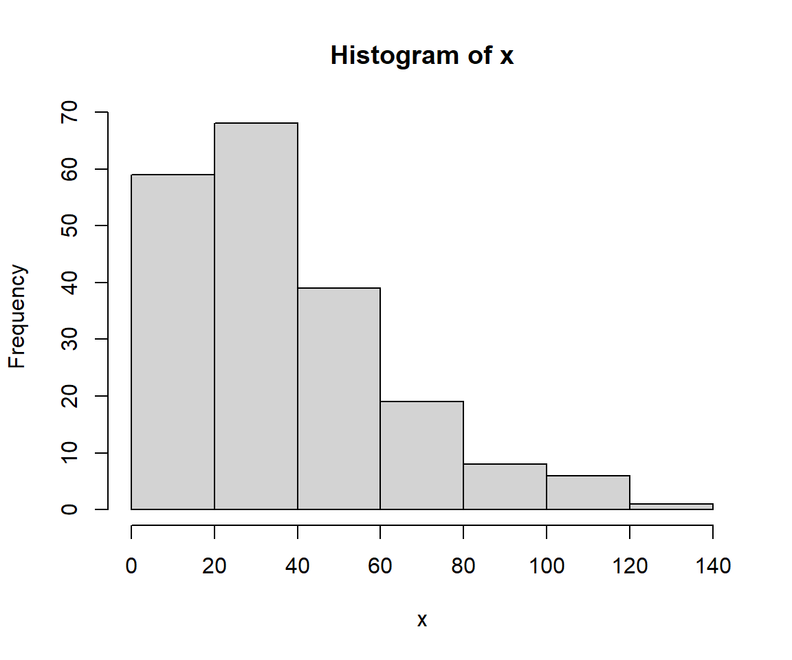
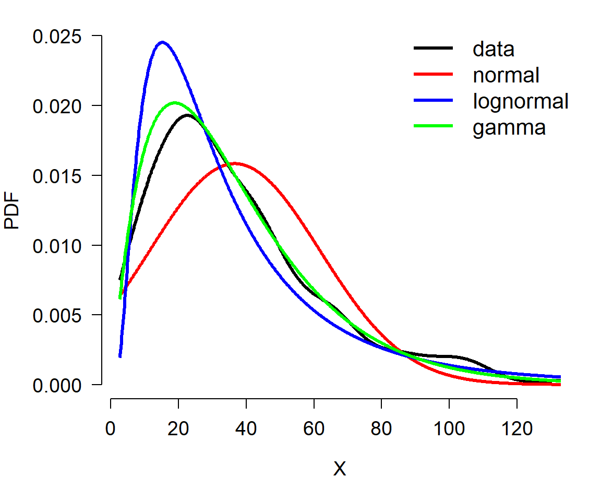
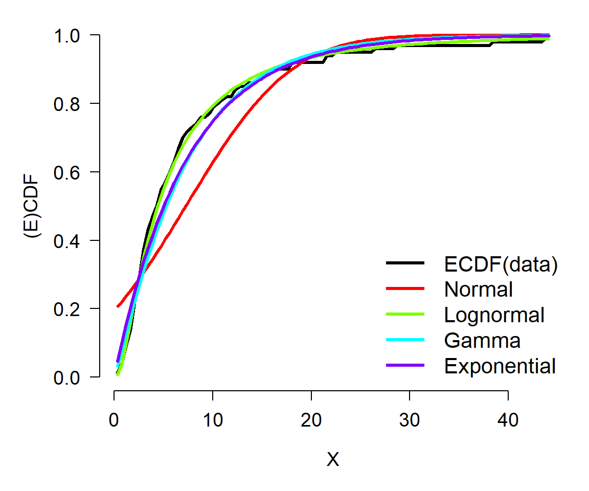
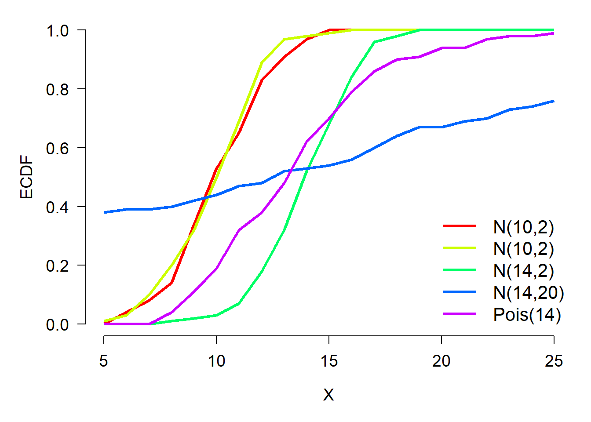
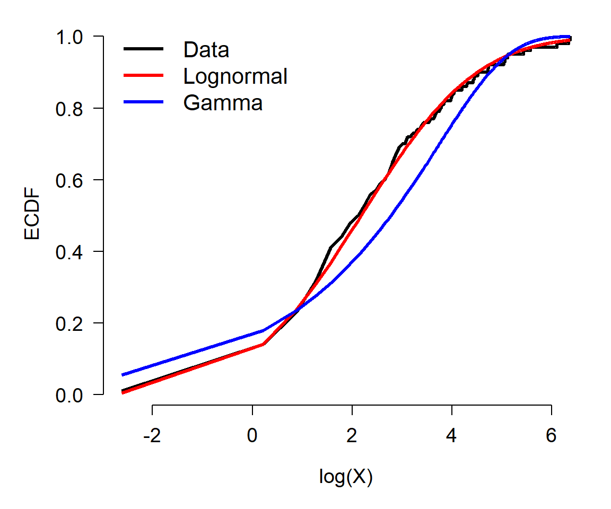

library(MASS)
set.seed(123)
n <- 50
# estimate parameters of a normal
x1 <- rnorm(n, 12, 2)
fitdistr(x1, "normal") mean sd
12.0688071 1.8331290
( 0.2592436) ( 0.1833129)Deciding what probability distribution to use to analyze your data is an important step in biological data analysis. The next step is to see how well your data actually match a distribution. This section demonstrates ways to compare data to probability distributions. We will also explore some methods to explicitly test whether or not a set of values came from a particular distribution.
The function fitdistr() in package MASS estimates the parameters of a distribution most likely to produce random variables supplied as input. Simply put, if you have a variable x and want to know what parameters of some distribution are most likely to produce x, then fitdistr() will estimate this for you.
library(MASS)
set.seed(123)
n <- 50
# estimate parameters of a normal
x1 <- rnorm(n, 12, 2)
fitdistr(x1, "normal") mean sd
12.0688071 1.8331290
( 0.2592436) ( 0.1833129)# estimate parameters of a poisson
x2 <- rpois(n, 8)
fitdistr(x2, "Poisson") lambda
8.2200000
(0.4054627)# estimate parameters of a geometric
x3 <- rgeom(n, 0.7)
fitdistr(x3, "geometric") prob
0.90909091
(0.03876377)# estimate parameters of a beta
# unlike most distributions, need to
# supply starting values
x4 <- rbeta(n, 2, 0.5)
fitdistr(x4, "beta", start=list(shape1=1, shape2=1)) shape1 shape2
2.1520168 0.5070293
(0.4828815) (0.0844015)# estimate parameters of a negative binomial
x5 <- rnbinom(n, 4, 0.2)
fitdistr(x5, "negative binomial") size mu
3.674590 15.660000
( 0.907684) ( 1.283731)How did fitdistr() do? Most of the parameter estimates were pretty close to the true values. The estimates generally get closer as the sample size increases. Try increasing n to 500 and rerunning the code above.
We can compare the distributions implied by the estimated parameters to the actual data using the quantile or distribution functions. The basic idea is to plot the data distribution, and superimpose the equivalent plots of the hypothetical distributions.
In the example below, we compare the probability mass function (PMF) of a discrete distribution (e.g., counts) to the PMFs of two possible distributions that might match the data. Note that the PMF of a discrete distribution can be estimated as the proportion of observations that take on each value.
set.seed(123)
# the counts:
x <- rnbinom(100, mu=4, size=2)
# fit parameters for poisson and negative binomial
f1 <- fitdistr(x, "Poisson")
f2 <- fitdistr(x, "negative binomial")
# calculate PMFs of candidate distributions across
# range of data
xx <- 0:max(x)
y1 <- dpois(xx, f1$estimate)
y2 <- dnbinom(xx, size=f2$estimate["size"],
mu=f2$estimate["mu"])
# empirical PMF of counts
y3 <- table(x)/length(x)
plot.x <- as.numeric(names(y3))
plot.y <- as.numeric(y3)
# make plot
par(mfrow=c(1,1), mar=c(5.1, 5.1, 1.1, 1.1),
las=1, lend=1,
cex.axis=1.2, cex.lab=1.2, bty="n")
plot(plot.x, plot.y, type="o",
pch=15, cex=1.3, ylim=c(0, 0.2),
ylab="PMF", xlab="X")
points(xx, y1, type="o", pch=16, cex=1.3, col="red")
points(xx, y2, type="o", pch=17, cex=1.3, col="blue")
legend("topright", legend=c("data", "Poisson", "negative binomial"),
pch=15:17, pt.cex=1.3,
col=c("black", "red", "blue"), bty="n")
In this example, the data (black) seem to be better described by the negative binomial (blue) than by the Poisson (red).
The same idea can be applied to continuous distributions. The only difference is in how the probability density function (PDF) of the data is estimated (note PDF, not PMF). The PDF of a continuous distribution is estimated with function density(). It is a good idea to limit the estimation of density functions to the domain of the data. Keep in mind, however, that different distributions have different limits. If the data contain values outside the supported interval of the suspected distribution, that distribution cannot be correct.
The example below illustrates this: the data (x) are all positive, but one of the distributions tested (normal) will produce negative values using the estimated parameters (f1). That alone should lead the researcher in this situation to eliminate the normal as a possibility; the plot only confirms the unsuitability of the normal for modeling x.
set.seed(123)
# the data:
x <- rgamma(200, shape=2, scale=20)
hist(x)
# fit parameters for poisson and negative binomial
f1 <- fitdistr(x, "normal")
f2 <- fitdistr(x, "lognormal")
f3 <- fitdistr(x, "gamma")
# calculate PMFs of candidate distributions across
# range of data
xx <- seq(min(x), max(x), length=1000)
y1 <- dnorm(xx, f1$estimate[1], f1$estimate[2])
y2 <- dlnorm(xx, f2$estimate[1], f2$estimate[2])
y3 <- dgamma(xx, shape=f3$estimate[1], rate=f3$estimate[2])
# empirical PDF of data
dx <- density(x, from=min(x), to=max(x))
# make plot
par(mfrow=c(1,1), mar=c(5.1, 5.1, 1.1, 1.1),
las=1, lend=1,
cex.axis=1.2, cex.lab=1.2, bty="n")
plot(dx$x, dx$y,
type="l", lwd=3, ylim=c(0, 0.025),
ylab="", xlab="X")
title(ylab="PDF", line=4)
points(xx, y1, type="l", lwd=3, col="red")
points(xx, y2, type="l", lwd=3, col="blue")
points(xx, y3, type="l", lwd=3, col="green")
legend("topright",
legend=c("data", "normal", "lognormal", "gamma"),
lwd=3, col=c("black", "red", "blue", "green"),
cex=1.3, bty="n")
The plot suggests that the data are better described by a gamma distribution than by a normal or lognormal. This is because the curve for the data is most closely matched by the curve for the gamma. Try adjusting the sample size in the example above (e.g., n <- 50) and see if the correct distribution always matches the data.
Another way to compare data to distributions is with the cumulative distribution function (CDF). The basic idea is the same as using density functions: compare the empirical CDF (ECDF) of the data to the CDFs potential distributions and judge which one best matches the data.
The example below shows how to use ECDF and CDF to compare a continuous distribution to various target distributions.
set.seed(123)
# make the data:
x <- rlnorm(100, meanlog=log(4), sdlog=log(3))
# fit some distributions
f1 <- fitdistr(x, "normal")
f2 <- fitdistr(x, "lognormal")
f3 <- fitdistr(x, "gamma")
f4 <- fitdistr(x, "exponential")
# calculate density functions over domain of x
xx <- seq(min(x), max(x), length=100)
y1 <- pnorm(xx, f1$estimate["mean"], f1$estimate["sd"])
y2 <- plnorm(xx, f2$estimate["meanlog"], f2$estimate["sdlog"])
y3 <- pgamma(xx,
shape=f3$estimate["shape"],
rate=f3$estimate["rate"])
y4 <- pexp(xx, rate=f4$estimate["rate"])
# ecdf of data
y5 <- ecdf(x)(xx)
# fancy plot
cols <- c("black", rainbow(4))
par(mfrow=c(1,1), mar=c(5.1, 5.1, 1.1, 1.1),
las=1, lend=1,
cex.axis=1.2, cex.lab=1.2, bty="n")
plot(xx, y5, type="l", lwd=3, xlab="X",
ylab="(E)CDF", ylim=c(0,1), col=cols[1])
points(xx, y1, type="l", lwd=3, col=cols[2])
points(xx, y2, type="l", lwd=3, col=cols[3])
points(xx, y3, type="l", lwd=3, col=cols[4])
points(xx, y4, type="l", lwd=3, col=cols[5])
legend("bottomright",
legend=c("ECDF(data)", "Normal", "Lognormal", "Gamma", "Exponential"),
lwd=3, col=cols, bty="n", cex=1.3)
In this example, the ECDF of the original data (black) appears to best match the lognormal (green)—as well it should, because the data came from a lognormal distribution. The normal (red) is clearly inappropriate because it diverges from the actual data over most of the range of the data. The gamma and exponential are each better than the normal, but not as close to the data as the lognormal.
Finally, you can use quantile-quantile (QQ) plots to compare data to different distributions that you suspect they may follow. The example below uses a QQ plot instead of ECDF as seen above.
set.seed(123)
# true distribution: lognormal
n <- 100
x <- rlnorm(n, meanlog=log(4), sdlog=log(3))
# estimate distributional parameters
f1 <- fitdistr(x, "normal")
f2 <- fitdistr(x, "lognormal")
f3 <- fitdistr(x, "gamma")
f4 <- fitdistr(x, "exponential")
# quantiles of reference distribution
qx <- ppoints(n)
# define functions to draw from each reference distribution
dfun1 <- function(p){qnorm(p, f1$estimate[1], f1$estimate[2])}
dfun2 <- function(p){qlnorm(p, f2$estimate[1], f2$estimate[2])}
dfun3 <- function(p){qgamma(p, shape=f3$estimate[1],
rate=f3$estimate[2])}
dfun4 <- function(p){qexp(p, f4$estimate)}
# get values at each reference quantile
qy1 <- dfun1(qx)
qy2 <- dfun2(qx)
qy3 <- dfun3(qx)
qy4 <- dfun4(qx)
# make plot
par(mfrow=c(2,2), mar=c(5.1, 5.1, 1.1, 1.1),
las=1, lend=1,
cex.axis=1.2, cex.lab=1.2, bty="n")
qqplot(qy1, x, main="Normal")
qqline(x, distribution=dfun1, col="red")
qqplot(qy2, x, main="Lognormal")
qqline(x, distribution=dfun2, col="red")
qqplot(qy3, x, main="Gamma")
qqline(x, distribution=dfun3, col="red")
qqplot(qy4, x, main="Exponential")
qqline(x, distribution=dfun4, col="red")
The figure shows that the normal is clearly inappropriate because the points do not fall on the line. The gamma and exponential are okay over most of the domain of x, but depart for large values. The lognormal plot (top right) shows the best match between the data and the reference distribution.
It is important to keep in mind that the comparisons we’ve made here are of idealized cases. Real data are often much messier and noisier than the distributions used in these examples. Sometimes real data are best characterized by mixture distributions for which there are no straightforward ways to estimate parameters. Still, the steps outlined above for estimating distributional parameters and comparing to idealized distributions are important first steps in data analysis.
The normal distribution is so important for so many statistical methods that people have developed tests to formally determine whether data come from a normal distribution. The most common test for normality is the Shapiro-Wilk test. The Shapiro-Wilk test tests the null hypothesis that a sample x1, …, xn comes from a normally distributed population. The test statistic W is calculated as:
\[W=\frac{\left(\sum_{i=1}^{n}{a_ix_{(i)}}\right)^2}{\sum_{i=1}^{n}\left(x_i-\bar{x}\right)^2}\]
where \(\bar{x}\) is the sample mean, \(x_i\)~ is the \(i^{th}\) order statistic, and \(a_i\) is a coefficient related to expected values of i.i.d. normal variables. When the null hypothesis of a Shapiro-Wilk test is rejected, then there is evidence that the data are not normally distributed. The code below shows some examples of the Shapiro-Wilk test in R.
set.seed(123)
x1 <- rnorm(20)
shapiro.test(x1)
##
## Shapiro-Wilk normality test
##
## data: x1
## W = 0.96858, p-value = 0.7247x2 <- rpois(20, 10)
shapiro.test(x2)
Shapiro-Wilk normality test
data: x2
W = 0.90741, p-value = 0.0569x3 <- runif(20)
shapiro.test(x3)
Shapiro-Wilk normality test
data: x3
W = 0.9316, p-value = 0.1658x4 <- runif(100)
shapiro.test(x4)
Shapiro-Wilk normality test
data: x4
W = 0.96392, p-value = 0.007723Interestingly, the Shapiro-Wilk test turns out to be very powerful. That is, it can detect very small differences from the null hypothesis (i.e., normality) if the sample size is large enough. So, if you have data that you suspect are normal, but the Shapiro-Wilk test says otherwise, you need to visually inspect the data to determine how serious the departure from normality is.
The Kolmogorov-Smirnov (KS) test is a non-parametric test that compares a dataset to a distribution. Unlike the Shapiro-Wilk test, which only tests for normality, the KS test can compare data to any distribution. The KS test is useful because it is sensitive to differences in both location (i.e., mean) and shape. The example below illustrates the use of the KS test and plots the distributions.
n <- 1e2
x1 <- rnorm(n, 10, 2)
x2 <- rnorm(n, 10, 2)
x3 <- rnorm(n, 14, 2)
x4 <- rnorm(n, 14, 20)
x5 <- rpois(n, 14)
# run KS tests:
ks.test(x1, x2)
Asymptotic two-sample Kolmogorov-Smirnov test
data: x1 and x2
D = 0.1, p-value = 0.6994
alternative hypothesis: two-sidedks.test(x1, x3)
Asymptotic two-sample Kolmogorov-Smirnov test
data: x1 and x3
D = 0.66, p-value < 2.2e-16
alternative hypothesis: two-sidedks.test(x3, x4)
Asymptotic two-sample Kolmogorov-Smirnov test
data: x3 and x4
D = 0.41, p-value = 1.001e-07
alternative hypothesis: two-sidedks.test(x3, x5)
Asymptotic two-sample Kolmogorov-Smirnov test
data: x3 and x5
D = 0.25, p-value = 0.003861
alternative hypothesis: two-sided# make a plot
xx <- 5:25
y1 <- ecdf(x1)(xx)
y2 <- ecdf(x2)(xx)
y3 <- ecdf(x3)(xx)
y4 <- ecdf(x4)(xx)
y5 <- ecdf(x5)(xx)
cols <- rainbow(5)
par(mfrow=c(1,1), mar=c(5.1, 5.1, 1.1, 1.1),
bty="n", las=1, lend=1,
cex.axis=1.2, cex.lab=1.2)
plot(xx, y1, type="l", lwd=3,
xlab="X", ylab="ECDF", col=cols[1])
points(xx, y2, type="l", lwd=3, col=cols[2])
points(xx, y3, type="l", lwd=3, col=cols[3])
points(xx, y4, type="l", lwd=3, col=cols[4])
points(xx, y5, type="l", lwd=3, col=cols[5])
legend("bottomright",
legend=c("N(10,2)", "N(10,2)",
"N(14,2)", "N(14,20)", "Pois(14)"),
lwd=3, col=cols, bty="n", cex=1.3)
The KS test results show that distributions x1 and x2 are not different (\(p>0.05\)). This makes sense because they are both normal distributions with the same mean and SD. Distributions x1 and x3 are different because they have different means (10 vs. 14). Distributions x3 and x4 were different because they had different SD (2 vs. 20). Finally, distributions x3 and x5 were different because they were different distributions with different shapes (normal vs. Poisson).
The KS test can be useful when you want to see how well your data matches up with their theoretical distribution. Consider the example of a lognormally distributed response below. If we suspect that the data come from a lognormal distribution or a gamma distribution, we can use the function fitdistr() to estimate the parameters of a lognormal and a gamma distribution that are most likely to produce those data. Then, we use a KS test to compare the data to the idealized candidates.
# random number seed
set.seed(123)
# generate data
x1 <- rlnorm(100, 2, 2)
# estimate moments
fit1 <- fitdistr(x1, "lognormal")
fit2 <- fitdistr(x1, "gamma")Notice that the parameters from fitdistr() are supplied as arguments to ks.test(), following the name of the distribution we want to compare to. If parameters are not supplied, then R will perform the KS test using the default parameter values (e.g., meanlog=0 and sdlog=1 for plnorm(); none for pgamma()), which is not what we want.
ks.test(x1, "plnorm", fit1$estimate[1], fit1$estimate[2])
Asymptotic one-sample Kolmogorov-Smirnov test
data: x1
D = 0.058719, p-value = 0.8808
alternative hypothesis: two-sidedThe test shows that we cannot conclude that x1 is different from a lognormal distribution.
ks.test(x1, "pgamma", shape=fit2$estimate[1],
rate=fit2$estimate[2])
Asymptotic one-sample Kolmogorov-Smirnov test
data: x1
D = 0.16211, p-value = 0.01043
alternative hypothesis: two-sidedThe test shows that x1 is likely different from a gamma distribution.
# plot x1 and its theoretical distribution
xx <- seq(min(x1), max(x1), length=500)
y1 <- ecdf(x1)(xx)
y2 <- plnorm(xx, fit1$estimate[1], fit1$estimate[2])
y3 <- pgamma(xx, shape=fit2$estimate[1], rate=fit2$estimate[2])
par(mfrow=c(1,1), mar=c(5.1, 5.1, 1.1, 1.1), bty="n",
las=1, lend=1, cex.axis=1.2, cex.lab=1.2)
plot(log(xx), y1, type="l", lwd=3, xlab="log(X)", ylab="ECDF")
points(log(xx), y2, type="l", lwd=3, col="red")
points(log(xx), y3, type="l", lwd=3, col="blue")
legend("topleft",
legend=c("Data", "Lognormal", "Gamma"),
lwd=3,
col=c("black", "red", "blue"),
bty="n",
cex=1.3)
While neither the lognormal distribution nor the gamma distribution are awful at representing the data, the KS tests suggest that the simulated data x1 come from a lognormal distribution, not a gamma distribution. This is because the KS test was non-significant when comparing the data to the lognormal, and significant when comparing the data to the gamma distribution. The test comparing the data to the gamma distribution was, however, close to non-significant (\(p\approx0.01\)). See what happens if you change the random number seed and re-run the random generation and the test.